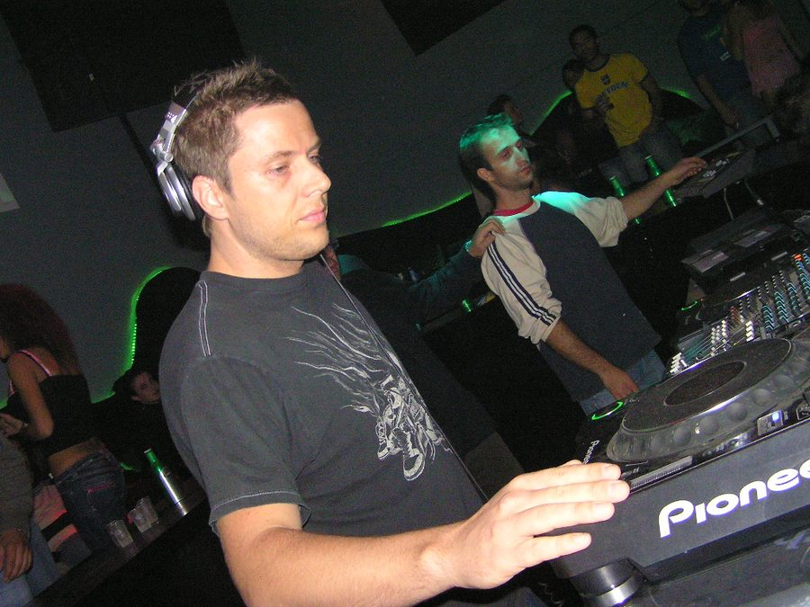

Jimmy Van M returns to restore Balance



That’s right, Jimmy Van M is back after the successful release of his Balance 10 compilation last year with a follow-up release. His epic 3CD effort journeyed its way through a wide spectrum of genres and styles, and this time Jimmy is taking the energy up a notch with Balance 10.1 – a peak-time mix of tunes from his favourite producers and a snapshot of what you might hear on the dance-floor at one of his gigs across the globe.
The mix starts off in style with an ambient intro especially written for the CD by Russian artists Moonbeam setting the mood in preparation for a journey through deep and haunting sounds, which is highlighted by the Radioslave remix of Unkle’s – Burn My Shadow. From here everything starts to take shape with more energy and atmosphere once Stephen Bodzin’s neo-trancer Cucuma bursts into the mix. Other highlights on the disc include Smith and Selway’s driving remix of Mauro Picotto and the Moonbeam remix of Steve T There Were Lights.
Jimmy Van M has built his reputation on adaptability, from his opening sets to his peak-time club sessions and all the way through to the after-hours parties. His ability to deliver music ranging from the deepest of early morning sessions to the most banging mainroom affairs has placed him in good company throughout the world.
Balance 10.1 is out October 15, catch him in the flesh as he tours Australia next month.
Friday 19th Oct: Sydney, Sweetchilli
Saturday 20th Oct: Melbourne, Darkbeat
Sunday 21st Oct: Gold Coast, Platinum
Friday 26th Oct: Perth, Ambar
Saturday 27th Oct: Cairns, Velvet Underground